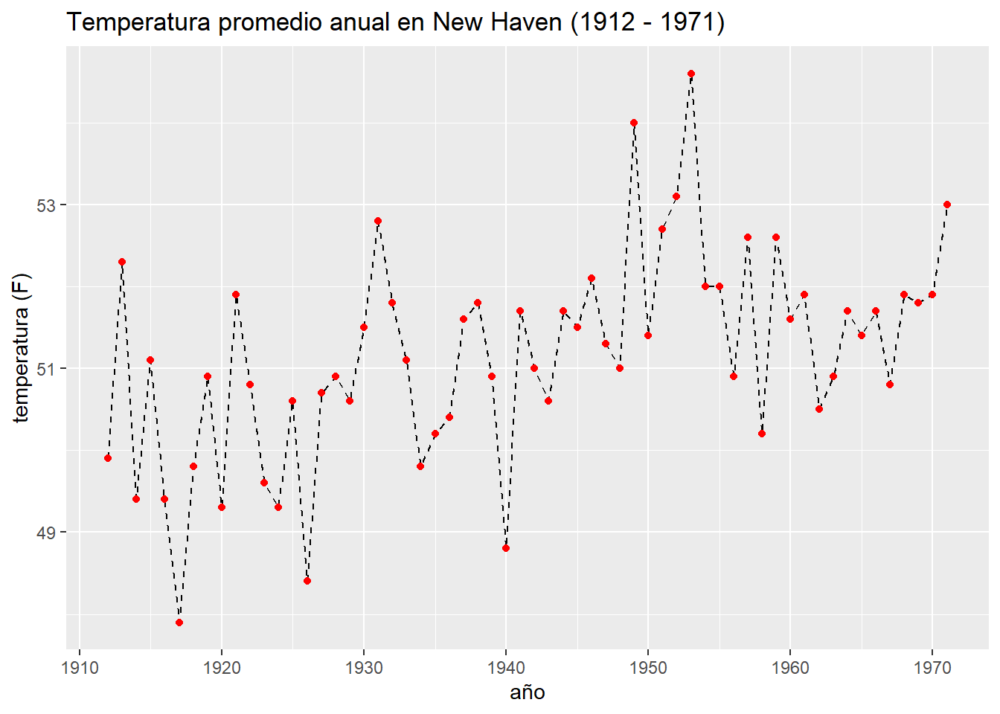
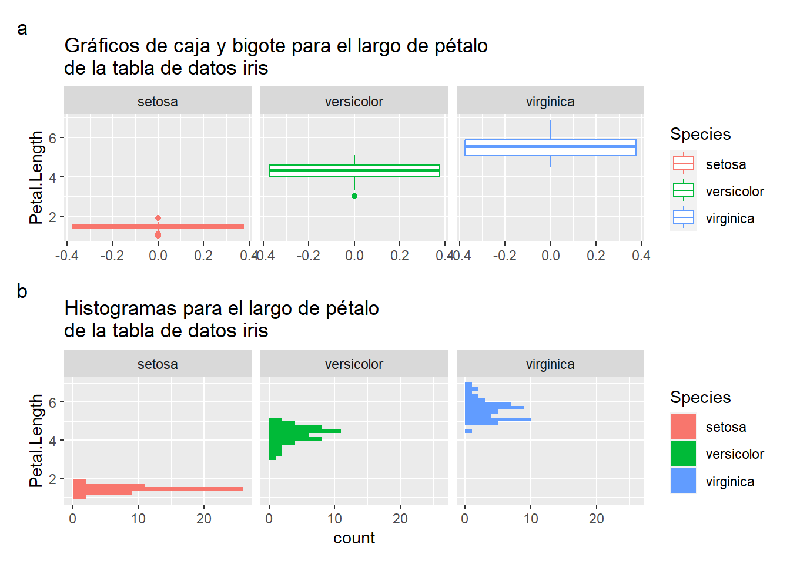

data(airquality)
airqualityTrabajo final
Aquí encontrarás los lineamientos para las dos opciones que tienes para llevar a cabo el trabajo final de este curso. Independientemente de la opción que uses, el trabajo final deberá ser presentado en formato .pdf con un apéndice donde esté presente el código de R que usaste.
Opción 1: Reporte estadístico de datos propios
Estructura básica del informe:
Título
Resumen
Breve resumen de tu investigación/estudio. Debe contener aspectos generales cómo (y no necesariamente en este orden o limitado a): problema, metodología usada para resolver el problema, resultados principales y conclusión corta.
- Objetivos
Puedes usar un objetivo general y tantos objetivos específicos creas necesario. Puedes guiarte en la o las hipótesis de tu estudio para redactar objetivos consecuentes y precisos.
- Metodología
Breve descripción del diseño experimental usado, la o las hipótesis del estudio, los análisis estadísticos realizados. No hace falta el describir en detalle cada una de las metodologías estadísticas usadas.
- Resultados
Resumen de los resultados obtenidos.
Conclusiones
Bibliografía (no es obligatorio, a menos que creas que sea necesario mencionar a mayor detalle el problema a resolver)
En caso de que optes por usar bibliografía, eres libre de usar cualquier estilo bibliográfico de tu agrado.
- Anexos
En esta sección debes adjuntar el código de R que usaste y el ánalisis exploratorio de tus datos.
Opción 2: Resolver las siguientes preguntas:
Pregunta 1
Con la ayuda de R, describe en tus propias palabras la tabla de datos mtcars disponible con R base. Además, reporta:
Los estadísticos descriptivos de esta tabla de datos
La moda de las variables
wt,carb,gearyqsecusando el método de valor más frecuente (mfv)
Pregunta 2
Usando la tabla de datos airquality de R base
Crea una tabla de frecuencias categorizando la variable Ozone mediante el método de Scott.
Pregunta 3
Los datos nhtemp de R base corresponden a las temperaturas anuales promedio de la localidad de New Haven entre 1912 y 1971. Estos datos están almacenados en forma de un vector con nombres.
data(nhtemp)
nhtempTime Series:
Start = 1912
End = 1971
Frequency = 1
[1] 49.9 52.3 49.4 51.1 49.4 47.9 49.8 50.9 49.3 51.9 50.8 49.6 49.3 50.6 48.4
[16] 50.7 50.9 50.6 51.5 52.8 51.8 51.1 49.8 50.2 50.4 51.6 51.8 50.9 48.8 51.7
[31] 51.0 50.6 51.7 51.5 52.1 51.3 51.0 54.0 51.4 52.7 53.1 54.6 52.0 52.0 50.9
[46] 52.6 50.2 52.6 51.6 51.9 50.5 50.9 51.7 51.4 51.7 50.8 51.9 51.8 51.9 53.0En base a estos datos, trata de reproducir el siguiente gráfico de la manera más próxima que puedas

TIPS:
ggplot2requiere una tabla de datos. Para crear una tabla de datos, puedes usar el comandodata.framey la funciónseqpara generar los años entre 1912 y 1971.Para lograr líneas entrecortadas en la geometría
geom_line, puedes hacerlo especificando el argumentolinetype = "dashed"dentro de la misma.
Pregunta 4
Usando la tabla de datos iris de R base:
data(iris)
irisTrata de reproducir el siguiente gráfico de la manera más aproximada que puedas

TIP: Para lograr saltos de línea en las etiquetas de un gráfico, puedes usar el código “\n” en donde desees poner el salto en el texto de la etiqueta
Pregunta 5
Genera el mapa de observaciones perdidas de la tabla de datos airquality y una matriz de gráficos de dispersión.
¿Qué puedes concluir acerca de estos datos observando estos dos gráficos que haz generado?
¿Qué variables dejarías de lado para la matriz de gráficos de dispersión y por qué?
Pregunta 6
Un cólega tuyo, al enterarse que has tomado este curso, recurre a ti para que le ayudes a planear un experimento. Esta persona está interesada en evaluar la ganancia de peso en tres variedades de pollos sometidos a dos regímenes de dieta más un control con la dieta usual. El lugar donde se va a llevar a cabo el experimento cuenta con hasta 30 jaulas individuales para mantener a los pollos separados y evitar que coman raciones de alimentos que no les corresponda.
- ¿Qué tipo de diseño experimental le recomendarías usar?
- ¿Le recomendarías comprar más jaulas o con las que tiene son suficientes?
- ¿Cómo se vería la hoja de registro de datos (field book) para este experimento?
Pregunta 7
Ahora que la voz se ha pasado de que eres un(a) duro(a) para diseñar experimentos, otra persona te contacta y te pide consejo sobre que podría hacer en su caso: el objetivo es evaluar la efectividad de un medio de cultivo experimental para propagar cacao in vitro. Debido a las limitaciones de capacidad en el laboratorio donde se ha hecho esta nueva formulación, se ha logrado llegar a un acuerdo entre 4 universidades que prestarán personal y espacio para llevar a cabo el experimento por separado pero de manera simultánea bajo el mismo protocolo. Los tratamientos son básicamente un control (el medio tradicional) y el experimental
- ¿Qué tipo de diseño experimental le recomendarías usar?
- ¿Cómo se vería la hoja de registro de datos (field book) para este experimento?
Pregunta 8
Por cuestiones prácticas, a veces es imposible el llevar a cabo un procedimiento de laboratorio de acuerdo a los protocolos estándar disponibles para su realización. En este sentido, a continuación podrás encontrar en resumen, un problema con el que me encontré durante la realización de mi tesis de pregrado:
El objetivo de mi investigación de pregrado fue el de medir la eficiencia de distintas cepas de cianobacterias en la reducción de demanda química de oxígeno (DQO), nitrógeno (N) y fósforo (P) en aguas residuales sintéticas. De acuerdo a los protocolos establecidos por la APHA, AWWA y WEF, para la medición de N y P se necesitan entre medio litro y un litro de aguas residuales. Debido a las limitaciones económicas y de espacio del laboratorio donde lleve a cabo mi tesis, dichas cantidades eran prácticamente imposibles de mantener. En su lugar, decidí modificar los métodos usando cantidades proporcionales de reactivos y muestras para lograr usar solamente 5 mL de agua residual por análisis. Esta práctica que es común en muchas ocasiones, necesita de un proceso de validación del método. Es decir, el demostrar estadísticamente que no existe diferencia entre los métodos estándar y los modificados. En el código de R que pongo a tu disposición a continuación, están las lecturas espectrofotométricas de N y P en valores bajos, medios y altos en los cuales la relación de las lecturas con el contenido de estos parámetros es lineal de acuerdo al método estándar:
datos_n <- data.frame(concentracion = c(rep("baja",4), rep("media",4), rep("alta",4)),
modificado = c(0.109, 0.109, 0.099, 0.093,
0.315, 0.300, 0.336, 0.302,
0.445, 0.450, 0.434, 0.433),
estandar = c(0.100, 0.092, 0.098, 0.102,
0.290, 0.314, 0.307, 0.322,
0.425, 0.242, 0.430, 0.438))
datos_p <- data.frame(concentracion = c(rep("baja",4), rep("media",4), rep("alta",4)),
modificado = c(0.112, 0.122, 0.116, 0.114,
0.229, 0.227, 0.229, 0.225,
0.346, 0.348, 0.440, 0.340),
estandar = c(0.118, 0.102, 0.110, 0.114,
0.202, 0.236, 0.249, 0.224,
0.352, 0.307, 0.336, 0.346))Usando las tablas anteriormente mencionadas, responde las siguientes preguntas:
¿Qué tipo de prueba estadística utilizarías?
¿Cuáles son las hipótesis nula y alternativa teniendo en cuenta que se busca demostrar que no existe diferencia entre las medias de los métodos estándar y modificado?
¿Son los datos normalmente distribuidos?
¿Son las medias entre los dos métodos iguales?
TIP: Necesitas segmentar los datos por cada una de las concentraciones para determinar si las medias son iguales para cada una de ellas. Para ello puedes usar el comando subset:
datos_n_baja <- subset(datos_n, concentracion == "baja")